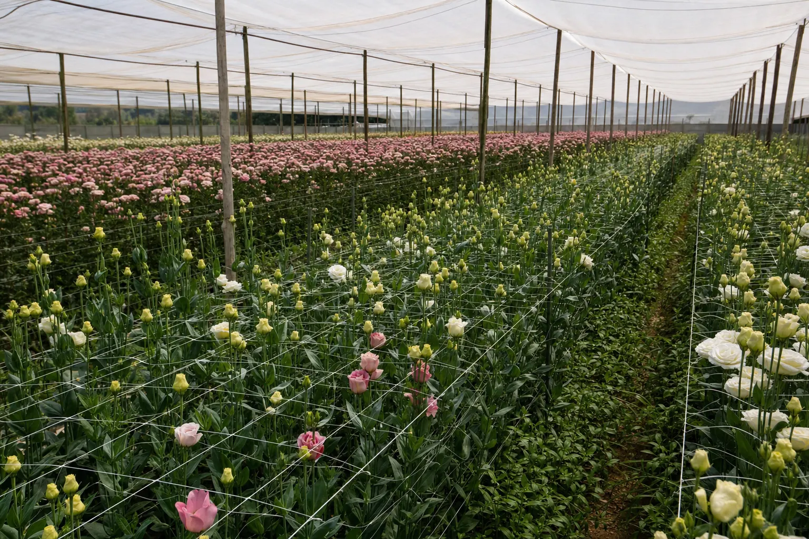

Cómo trabajo
El orden importa más que la receta. Primero el problema, después la medición, después la conclusión. Nunca al revés.

Del síntoma al plan
El problema
Todo parte de lo que tú observas: la planta desuniforme, la cuenta de agua, el rendimiento que bajó. Ese síntoma define qué se va a medir. Una visita sin problema definido es una visita cara y poco útil.
La medición
Se toman datos duros en terreno, en puntos georreferenciados y con procedimiento repetible. Medir en el lugar y en el momento correctos es la mitad del trabajo.
La evidencia
Los datos se cruzan entre sí. Un valor aislado no explica nada: la CE se lee junto al riego, la textura junto a la frecuencia, el síntoma junto al manejo. Y aquí está la parte incómoda: si la evidencia no alcanza para concluir, no se concluye. Se solicitan los análisis específicos que faltan —laboratorio de suelo, agua, foliar o diagnóstico fitopatológico— y se espera. Preferimos pedir un análisis más que hacerte invertir en una solución equivocada.
El plan
Un plan de ejecución priorizado: qué hacer primero, con qué criterio, qué esperar y cómo verificar que funcionó. Escrito para que lo pueda ejecutar quien trabaja el predio, no solo para que lo entienda otro agrónomo.
Áreas que cubre el diagnóstico
- Edafología y manejo de suelo
- Diseño y evaluación hidráulica
- Programación de riego y balance hídrico
- Nutrición y fertilización (suelo y solución nutritiva)
- Gestión fitosanitaria
- Manejo bajo cubierta e hidroponía
El problema del cliente casi nunca respeta los límites entre estas áreas. Por eso se evalúa el sistema completo y no una sola de sus partes.

Tres reglas que no se negocian
La recomendación no tiene ningún interés detrás más que resolver el problema.
Puedes revisarla, cuestionarla y volver a ella la temporada siguiente.
Te los entrego en formato reutilizable, no en una presentación cerrada.
¿Tu problema calza con este método?
Descríbelo por WhatsApp. Si se resuelve midiendo, te digo qué se mediría. Si no, también te lo digo. Sin costo por esa conversación.